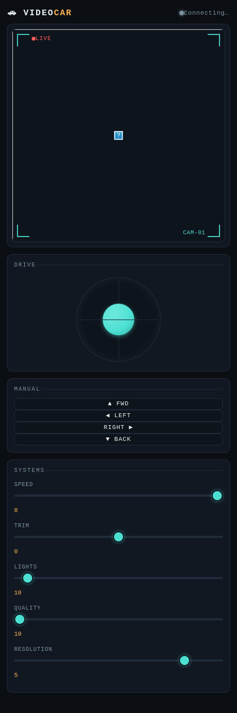

Enhanced firmware + web control page for the keyestudio ESP32-CAM Video Smart Car. Built on top of keyestudio's stock sketch, with a virtual joystick, connection-loss failsafe, snapshot/video capture, a redesigned control UI, and a PlatformIO build system alongside the original Arduino IDE sketch.
git clone https://github.com/abourdim/video-car.git
cd video-car
Arduino IDE (known-good baseline): open
Codes/4_VideoCar/4_VideoCar.ino, select your esp32 board
package version under Tools > Board > Boards Manager, enable
Tools > PSRAM: Enabled, select the AI-Thinker ESP32-CAM board, and
flash as usual.
PlatformIO:
./launch.shWalks you through checking/installing PlatformIO, building, flashing, and opening a serial monitor. See Build systems below for what each menu option does.
Once flashed, connect to the keyes1 WiFi network (password
88888888) and open http://192.168.4.1 in a browser.
⚠ The Vision features need internet — the default AP mode has none.
Out of the box (ap = 1) the car hosts its own isolated
keyes1 network, which isn't connected to anything. Pose, Hand
tracking, Facial expression, Plates, AI Vision, and the jsQR fallback all download
their models from a CDN the first time you enable them, so on the car's own AP they
will fail to start. Driving, the video stream, snapshots, and recording all
work fine there — it's only the model-backed overlays that don't.
To use them, set ap = 0 near the top of
4_VideoCar.ino along with your router's ssid/password,
reflash, and read the car's IP off the serial monitor. Your phone or laptop then has
the car and the internet at the same time.
The one exception is QR / Barcode on Chrome, Edge, or Android
Chrome, which uses the browser's built-in BarcodeDetector and needs no
network at all — that one works on the car's own AP.
/joystick?x=&y=), arcade-mixed to per-wheel PWM, alongside the
original D-pad/keyboard controls.localStorage (instant restore on reload). On page
load the device's own values always win if they differ from the local cache.set_vflip/set_hmirror
live, so you can fix the camera's orientation for your chassis without
reflashing.tfjs runtime (avoids a separate MediaPipe script/wasm bundle from
yet another host), 21 keypoints per hand plus left/right handedness (orange).@vladmandic/face-api (an actively-maintained fork of the long-dormant
face-api.js), whose model weights are published in the same npm package as the
script — unlike most of Vision, this only depends on a single host
(jsdelivr) rather than two.BarcodeDetector when available (Chrome/Edge/Android Chrome) —
no network needed at all, works even on the car's own isolated AP. Falls back to
the jsQR library (QR codes only, needs internet once) on browsers without native
support (Safari/iOS)..webm/.mp4
client-side (Canvas + MediaRecorder pulling frames from /capture)
since the ESP32 itself can't encode video or write to an SD card in this
sketch.Full change-by-change writeup: report.html.
Codes/ Original Arduino-IDE-style sketch layout (all 4 sketches)
4_VideoCar/ The enhanced sketch -- flash this one from Arduino IDE
firmware/ PlatformIO projects, one per sketch
1_blink/ Onboard LED blink demo
2_breathing_light/ PWM LED fade demo
3_motor/ Motor driver test sequence (drives on boot -- give it room!)
4_videocar/ Mirrors Codes/4_VideoCar -- the main project
launch.sh Interactive PlatformIO menu, lets you pick which app to build/flash/monitor
report.html Detailed change report
README.html This documentCodes/4_VideoCar and firmware/4_videocar/src are kept in
sync — same source, two build systems. If you edit one, mirror the change into
the other. The other three sketches (1_blink, 2_breathing_light,
3_motor) only exist as Arduino sketches under Codes/ and as
PlatformIO projects under firmware/ — no enhancements have been made
to those, they're simple demos included for a complete workshop package.
Each sketch is its own PlatformIO project under firmware/<name>/,
all targeting env:esp32cam (AI-Thinker pinout) since it's the same
physical board for all four:
| App | Notes |
|---|---|
1_blink | Trivial LED blink, no special config needed. |
2_breathing_light | PWM LED fade, no special config needed. |
3_motor | Drives forward/back/left/right immediately on boot/reset — give the car room to move before flashing or resetting it. |
4_videocar | The main project — see the table below for why its platformio.ini has extra settings the other three don't need. |
firmware/4_videocar/platformio.ini:
| Setting | Value | Why |
|---|---|---|
platform |
espressif32@6.5.0 |
Pinned, not left on "latest" — an unpinned platform can silently pull a
different esp32-camera driver version than what Arduino IDE has
installed, which changes camera sensor-probe behavior. 6.5.0
(arduino-esp32 2.0.14) is the version this project is confirmed working against.
The other three apps are pinned to the same version too, for consistency, even
though they're too simple to be sensitive to it. |
board_build.partitions |
huge_app.csv |
The camera+WiFi+webserver binary doesn't fit the default partition table. Same as picking "Huge APP (3MB No OTA/1MB SPIFFS)" in Arduino IDE. |
build_flags |
-DBOARD_HAS_PSRAM,-mfix-esp32-psram-cache-issue |
Arduino IDE's Tools > PSRAM: Enabled menu sets these behind
the scenes; PlatformIO's generic esp32cam board definition does not,
even though the board has PSRAM. This was the actual root cause of
"works in Arduino IDE, camera fails in PlatformIO" (Camera init failed
with error 0x106) — see Troubleshooting. |
upload_speed |
460800 |
Safer default than 921600 for boards flashed through a bare FTDI adapter with no auto-reset circuit. |
launch.sh menu:
0) Select app 5) Build + Flash + Monitor
1) Check installation 6) Serial monitor
2) Install PlatformIO 7) List serial ports
3) Build firmware 8) Clean build
4) Flash firmwareIt prompts for which app to work with on startup (auto-discovers any
firmware/<name>/platformio.ini), and option 0 switches apps at any
time without restarting the script. Option 4 (Flash) prints the IO0/BOOT-button
reminder most bare ESP32-CAM programmers need: hold IO0, tap RESET, release IO0 once
"Connecting...." is actively retrying — and an extra warning for
3_motor about giving the car room to move.
platformio.ini (e.g. re-pinning the
platform version), run option 8 (Clean) before rebuilding so a stale
.pio/ cache doesn't mask the change.Standard Arduino IDE flow. Make sure Tools > PSRAM is set to
Enabled and Tools > Partition Scheme is set to a scheme
with enough app space (e.g. "Huge APP (3MB No OTA/1MB SPIFFS)").
See also the official tutorial's own Common Problems section (wrong board selection, IP/WiFi connection issues, battery/charging) for issues unrelated to this repo's changes.
This is ESP_ERR_NOT_SUPPORTED from the camera sensor probe. If the
same board works in Arduino IDE, it's a toolchain/build-flag mismatch, not hardware
— see the PSRAM/platform-pinning notes above. This project's
platformio.ini is already configured to avoid it; if you still hit it,
run ./launch.sh option 8 (Clean) to clear any stale build cache, and
confirm your Arduino IDE's installed esp32 core version
(Tools > Board > Boards Manager) roughly matches the pinned
PlatformIO platform version — if it's wildly different, re-pin
platform = espressif32@X.Y.Z to match.
Usually a marginal power supply — camera + WiFi init draws a current spike many FTDI adapters can't supply cleanly. Use a proper 5V/2A source. The sketch already enables the brownout-detector workaround, which will surface this as a clean retry/error message instead of a silent reboot loop, but it doesn't fix underlying undervoltage.
Shouldn't happen — the firmware failsafe stops the motors after 500ms
without a command. If you're seeing otherwise, confirm you're running the version
from this repo (git log --oneline) and not stock keyestudio firmware,
which has no such failsafe.
Known, unaddressed limitation carried over from the original sketch — see
report.html for details. Anyone on the keyes1
WiFi network (default password 88888888) can drive the car.
git log --onelineEach commit is a self-contained feature/fix; git log -p gives the
full line-by-line diff against the original keyestudio sketch at any point.